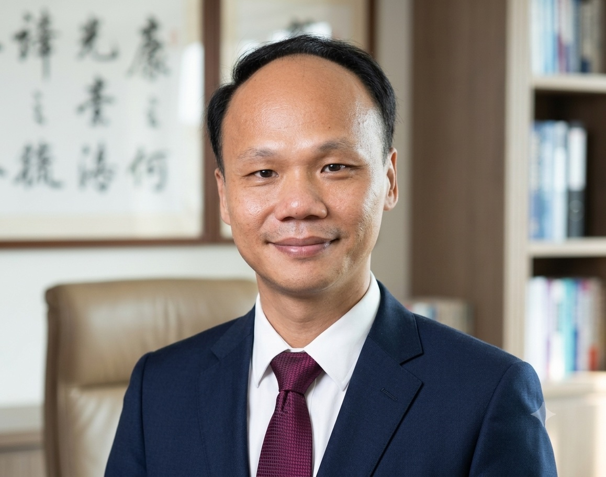

🌾
Character品格
以品格教育為根基，是辦學策略的第一步。
A century-old school in the heart of historic Lugang — where tradition and innovation meet, and every child is empowered to paint their bright future.
一所位於鹿港古鎮中心的百年學府——傳統與創新相遇，每個孩子都被賦予繪製光明未來的能力。

PrincipalBefore becoming principal, Kuo Mu-Tsun spent sixteen years at Wenkai as a homeroom teacher — ten years teaching a class, then two more years as a homeroom teacher who also served as Chief of the Business Affairs Section. He later served four years as Director of General Affairs, moved on to lead the Directorate of Academic Affairs and General Affairs at Guosheng Elementary School in Changhua City, and eventually returned to lead the school he calls home.
To Principal Kuo, Wenkai feels like a second home. Sixteen years of shared days have woven him deeply into this warm, extended family, and bound him closely to every colleague who has walked these halls alongside him.
文開對郭木村校長來說，就像是第二個家。擔任校長之前，他曾在文開國小擔任級任老師十年、級任老師兼事務組長兩年，之後歷任總務主任四年，再轉任彰化市國聖國小總務主任、教導主任，最終回到這個他稱為「家」的地方接任校長。
這 16 年的陪伴，讓校長深深地融入了文開這個溫暖的大家庭，也讓每一位夥伴的情感都緊緊相連。
Principal Kuo's approach to leading Wenkai rests on character, respect, growth, collaboration, and care — not slogans on a wall, but the daily texture of a school that feels like family.
郭校長帶領文開的方式，建立在品格、尊重、成長、合作與關懷之上——不是牆上的口號，而是這所像家一樣的學校裡，每天都看得見的日常。
A century-old school that still moves forward — rooted in reading, local heritage, and the whole-child growth of every student.
一所百年老校，依然不斷向前——扎根於閱讀、在地文化，以及每個孩子的全人成長。
Wenkai feels like a second home to me. These sixteen years of shared days have woven me deeply into this warm, extended family, binding my heart closely to every colleague who has walked these halls with me.
In the days ahead, I will keep treasuring every moment, weaving devotion and care into everyday life at Wenkai. I want to stand alongside every colleague and share the responsibility of widening our children's horizons — helping them step onto bigger, farther stages, so they can walk their own path in life with steadier, surer footing.
In how we run this school, I will build on character education as our foundation, respect every child's individuality, and offer personalized ways of learning — encouraging each one to shine in their own interests and strengths. I will also keep investing in every teacher's professional growth, and strengthen our teamwork and mutual support, so that we create a learning environment full of energy and love — one where children gain knowledge and growth together, and walk toward an even brighter future.
文開對個人來說，就像是第二個家。這16年的陪伴，讓個人深深地融入了這個溫暖的大家庭，也讓每一位夥伴的情感都緊緊相連。在這裡，我們不僅是一群同事，更是共同努力、彼此扶持的夥伴。
未來的日子，個人將繼續珍惜每一刻，將奉獻與關懷融入每一個文開的日常。個人願意與每一位夥伴一同肩負起拓展孩子們視野的使命，幫助他們站上更大、更遠的舞台，讓他們在人生的道路上走得更穩、更遠。
在辦學策略上，個人將以品格教育為根基，並尊重每個孩子的獨特性，提供個性化的學習方式，鼓勵他們在自己的興趣和專長上綻放光彩。個人也將持續關注每一位教師的專業成長，並強化團隊的合作與支持，創造出一個充滿活力和愛的學習環境，讓孩子們在這裡收穫知識，也收穫成長，邁向更加光明的未來。
Educators, parents, and friends are warmly welcome to visit Wenkai. We especially welcome colleagues interested in reading education, local-culture curriculum, and what a century-old bilingual campus looks like in practice.
歡迎教育工作者、家長與朋友蒞校交流。我們尤其歡迎對「閱讀教育」「在地文化課程」，以及「百年學府如何實踐雙語教育」有興趣的同道中人。